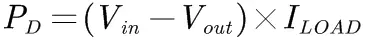
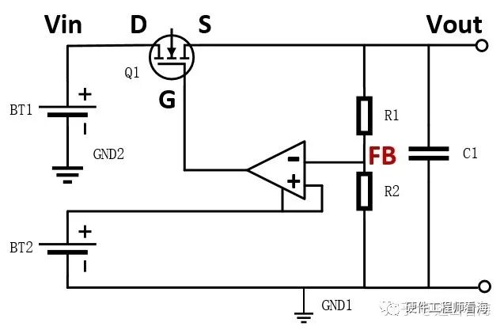
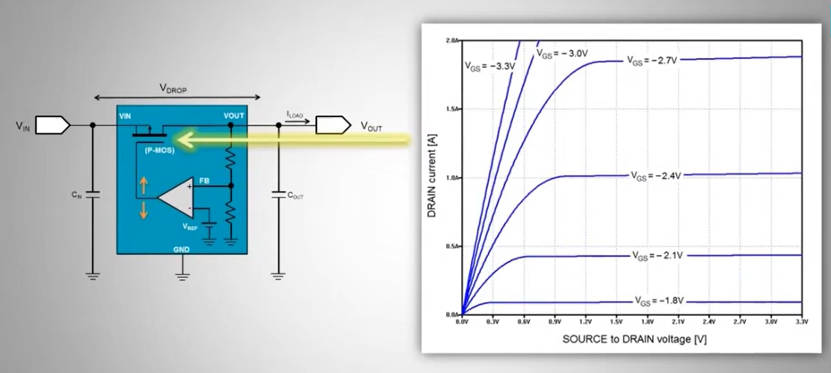
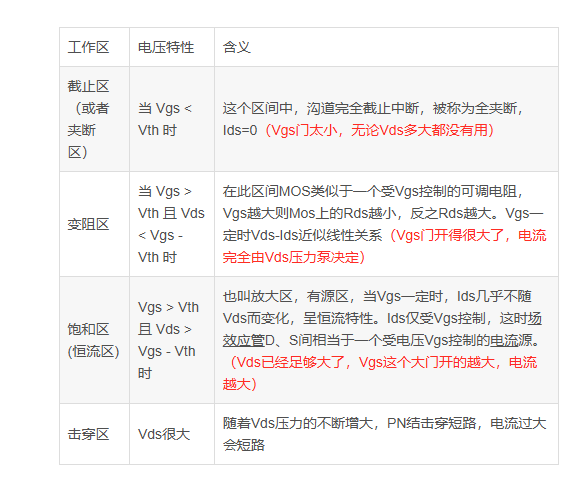

输入>输出+压降
电源大师1——DCDC电源分类：线性电源、开关电源、电荷泵。_哔哩哔哩_bilibili
一、线性电源分类
线性电源主要分为两种传统线性稳压器和低压差稳压器
- 传统线性稳压器
- 压差较高（通常≥2V），输入电压需显著高于输出电压。
- 典型芯片：LM7805（压差约2V）。
- 低压差稳压器（LDO, Low Dropout Regulator）LDO
- 压差极低（可低至0.1V-0.5V），适合输入输出电压接近的场景。
- 典型芯片：AMS1117（压差约1.1V）、MCP1700（压差低至0.18V）。
- 优势：减少能量损耗，延长电池设备续航时间。
1. 按功率管类型分类
（1）双极型晶体管（BJT）稳压器
- 核心器件：使用双极结型晶体管（BJT）作为调整管。
- 特点：
- 压差较高（通常≥2V）：BJT需要一定的基极驱动电压和饱和压降。
- 静态电流较大：基极电流会导致额外损耗，效率较低。
- 成本低：工艺成熟，适合低成本应用。
- 典型芯片：LM78xx系列（如LM7805）、LM317。
- 适用场景：传统高输入电压、非电池供电的场合。
（2）MOSFET型稳压器（LDO）
- 核心器件：使用MOSFET（金属-氧化物半导体场效应管）作为调整管。
- 特点：
- 低压差（Low Dropout, LDO）：压差可低至0.1~0.5V，MOSFET的导通电阻（Rds(on)）极小。
- 静态电流极低：栅极驱动电流几乎为零，适合电池供电设备。
- 高频性能好：MOSFET开关速度快，支持快速瞬态响应。
- 典型芯片：TPS7A系列（如TPS7A4700）、MCP1700。
- 适用场景：输入输出电压接近的低功耗场景（如手机、IoT设备）。
2. 按功率管工作模式分类
（1）NPN型稳压器
- 结构：使用NPN晶体管作为调整管，需较高的基极驱动电压。
- 缺点：压差大（通常≥2V），效率较低。
- 典型代表：传统78xx系列稳压器。
（2）PNP型稳压器
- 结构：使用PNP晶体管作为调整管，基极驱动电压要求较低。
- 优势：压差略低于NPN型（约1~1.5V），但仍高于LDO。
- 典型代表：部分早期LDO型号（如LM2931）。
（3）PMOS/NMOS型稳压器
- 结构：使用PMOS或NMOS作为调整管，无需基极驱动电流。
- 优势：
- 极低压差（PMOS型典型压差为0.2V，NMOS型更低）。
- 低静态电流：适合超低功耗场景。
- 典型芯片：PMOS型（如AMS1117），NMOS型（如ADP1740）。
3. 按功率管集成方式分类
（1）分立式稳压器
- 结构：功率管外置于稳压电路（如使用外部MOSFET或BJT）。
- 优势：灵活选择功率管参数，适合大电流或定制化设计。
- 缺点：外围电路复杂，体积较大。
- 典型应用：大功率线性电源、实验室设备。
（2）集成式稳压器
- 结构：功率管与控制器集成在同一芯片内。
- 优势：体积小、设计简单，适合标准化应用。
- 典型芯片：LM317（BJT集成）、LT3080（MOSFET集成）。
4. 功率管对性能的影响
- 压差（Dropout Voltage）：
- BJT稳压器压差大（2V以上），MOSFET（LDO）压差极小（0.1~0.5V）。
- 效率：
- BJT因基极电流损耗效率较低，MOSFET损耗集中在导通电阻（Rds(on)），效率更高。
- 静态电流：
- BJT稳压器静态电流（mA级）远高于MOSFET型（µA级）。
- 散热设计：
- 大电流或高压差场景需重点考虑功率管散热（如TO-220封装加装散热片）。
5. 典型芯片对比
| 功率管类型 | 典型芯片 | 压差 | 静态电流 | 适用场景 |
|---|---|---|---|---|
| 双极型（BJT） | LM7805 | 2V | 5mA | 传统电源适配器 |
| PNP型（LDO） | LM2931 | 0.4V | 1mA | 车载电子、工业设备 |
| PMOS型（LDO） | AMS1117 | 1.1V | 5µA | 便携设备、传感器 |
| NMOS型（LDO） | ADP1740 | 0.2V | 30µA | 电池供电设备（如手机） |
总结
线性稳压器的分类与功率管类型直接相关：
- 双极型（BJT）稳压器：成本低，但压差大、效率低，适合非低功耗场景。
- MOSFET型（LDO）：压差极小、静态电流低，适合现代电子设备的节能需求。
- 选择依据：
- 输入输出电压差：压差大选BJT，压差小选LDO。
- 功耗要求：电池供电优先选MOSFET型。
- 成本与复杂度：BJT方案更简单，LDO需权衡性能与成本。
二、问题
1、线性电源的参数（选型注意事项）
①
②
③压差（Dropout Voltage)：电压差称为压差维持电路正常工作所需的输入与输 出电压的最小差值。
④噪声：干扰信号，影响精度和信号质量。
⑤
⑥
2、线性电源的效率一定低于开关电源吗？
效率：
不一定，低压差线性电源的效率可以很高。
线性电源功率耗散计算公式

可见，高压降比和高负载电流会产生较高的功率耗散。
愈高的功率耗散一般需要愈大的LDO封装尺寸，这将增加整体成本、PCB面积，以及应用系统的运作温度。
当LDO功率耗散高于0.8W左右时，转为使用降压转换器(Buck)是较明智的作法。
挑选LDO时，必须考虑输入和输出的电压范围、LDO的负载能力，以及芯片封装的功率耗散能力。
3、线性电源不能并联扩流
三、功率管的工作原理
功率管是当作调整器来作用的，也就是工作在放大区，即可变电阻区域。开关电源是工作在截至区和饱和区。


1、电路分析
当Vout出现降低时，此时FB也会降低，对应此时栅极Vg会增大，减少Q管的电阻，提高电流，进一步提升Vout，当Vout有出现增长时，反之进行进一步改善。因此MOS管起到一个可变电阻的作用。
2、mos管相关知识
MOSFET工作区域判定方法_mosfet的工作区-CSDN博客
